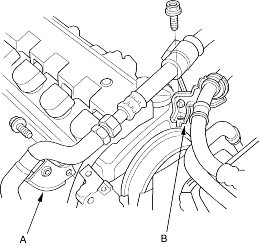
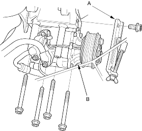
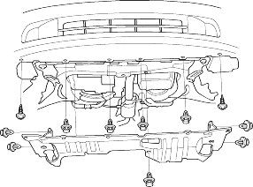

- Remove the alternator, refer to the '01 Civic Shop Manual on this CD (see page 4-31).
- Remove the air conditioning (A/C) hose bracket (A) and P/S hose bracket (B).

- Remove the alternator lower bracket (A), then remove the A/C compressor (B) without disconnecting the A/C hoses.

- Remove the radiator cap.
- Raise the hoist to full height.
- Remove the front tyres/wheels.
- Remove the splash shield.

- Loosen the drain plug in the radiator, drain the engine coolant, refer to the '01 Civic Shop Manual on this CD (see page 10-8).
- Drain the transmission fluid. Reinstall the drain plug using a new washer with MTF, refer to the '01 Civic Shop Manual on this CD (see page 13-3) or ATF, refer to the '01 Civic Shop Manual on this CD (see page 14-122).
- Drain the engine oil. Reinstall the drain bolt using a new washer (see page 8-3).